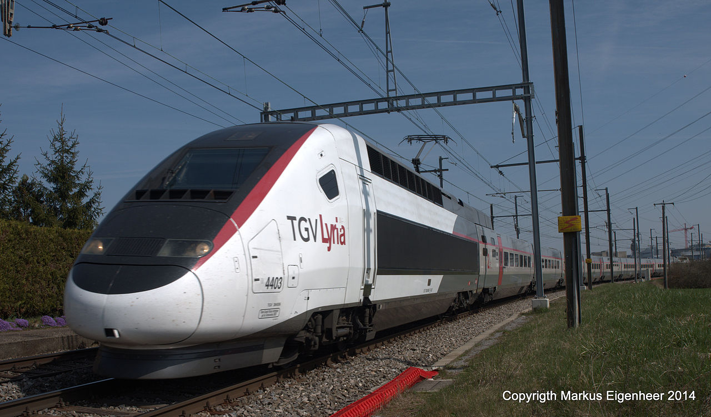

SNCF TGV POS
The TGV POS is a TGV train built by French manufacturer Alstom which is operated by the French national rail company, the SNCF, in France's high-speed rail lines. It was originally ordered by the SNCF for use on the new LGV Est, which was put into service in 2007. "POS" stands for Paris-Ostfrankreich-Süddeutschland (German for "Paris, Eastern France, Southern Germany").